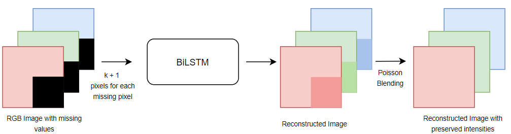

Nikita Raut
Computer Science Graduate Student at Northwestern University
About Me
I am a Computer Science graduate student at Northwestern University, Illinois. I am interested in the field of Artificial Intelligence which is constantly evolving in order to face modern challenges. It's usage and applicability in diverse applications such as image and speech recognition, healthcare, security, autonomous systems, and natural language processing fascinate me. I wish to explore the applications of machine learning in these diverse areas and aim to provide technology-driven automated and intelligent solutions to real-world challenges through my research.
Education
Northwestern University | Master's Degree
Sept 2019 - Present
Coursework: Introduction to AI, Machine Learning, Data Science Seminar, Deep Learning Foundations from Scratch, Statistical Pattern Recognition, Natural Language Processing, Advanced Deep Learning Design and Analysis of Algorithms, Practicum in Intelligent Information Systems
KJ Somaiya College of Engineering | Bachelor's Degree
2015 - 2019
Coursework: Artificial Intelligence, Machine Learning, Neural Networks and Fuzzy Logic, Data Warehousing and Mining, Advanced Database Management, Image Processing, Data Structures, Operating SystemsAnalysis of Algorithms
Work Experience
KJSCE | Deep Learning Internship
Dec 2017 - Jan 2018
- Implemented a Real Time Face Recognition System using k-shot Learning.
- Performed transfer learning, using a resnet model pretrained on triplet loss function.
- Brought down the training samples to as low as k= 1, still achieving a decent accuracy close to 90%.
- Achieved 98% accuracy for k = 5 shots and 50 classes
Computer Help | Machine Learning Internship
May - July 2017
- Developed an Damage Detection System using image processing, which aimed at an early detection of cracks in inaccessible places.
- Achieved fast and reliable detection of cracks to concrete surfaces, replacing the slower subjective traditional human inspection procedures.
Projects
Image Inpainting
Jan - March 2020
Performed restoration of missing or corrputed regions of an image with the objective of presenting the image such that it appears to be original. Most of the existing techniques work for images that have a fixed format of the missing part. Our method comprises computing the k nearest neighbors of each missing pixel and feeding them through a bidirectional LSTM to predict its pixel value. Poisson blending has been used match the pixel intensities of the reconstructed region with the surrounding region. We have focussed our research on implementing a model that is computationally less expensive by considering only significant pixels for predicting the unknown pixel values, and that is more generalized by making it independent of the shape and size of the missing region. The baseline model that we have used is Pixel Recurrent Neural Network, by DeepMind. We propose a new approach to deal with some of the shortcomings of PixelRNN like shape dependency, computationally expensive, unused pixels and discontinuity in order.
Text to SQL
Feb - March 2020
Creating a SQL query from a natural language is very helpful for people who have limited technical background. By using simple phrases (text) the model should be able to retrieve the information from databases. Most existing models have achieved decent accuracies at this task by making use of encoder-decoder models with an attention mechanism. However, the evaluation scheme used by most of these models has a number of limitations. One of the major limitations is poor generalizability to new programs and databases. Most datasets have queries in the test set which also appear in the training set, making the evaluation of many models flawed. We have tried to overcome this limitation using a recursive decoding approach. The decoding part is recursive, i.e. the decoder contains a call to itself. Each decoder is responsible for predicting a specific part of the SQL query. Given a natural language question posed to retrieve information from a large database, the objective was to translate this question to an equivalent SQL query, such that the execution of that query provides the user with the desired results. We have focussed our work on implementing a model that generalizes well for unseen data. We used the WikiSQL dataset which consists different tables in train and test sets. This ensures that the evaluation of our model on unseen data is accurate
See projectAnalyzing spread of COVID-19 using Graph Neural Networks
Feb - March 2020

The aim of this project is to provide users with an end-to-end pipeline for processing data related to COVID-19, create graph structure from that data and allow users to easily manage node features and edge weights. Our project has the following major components: • Data Loader: A data loader class to easily load population data, flight data and form graph nodes. It can also handle time-series data. • Graph Loader: A graph loader to create the graph representation in the form of a Pytorch-Geometric object. It has other features like creating graph edges, creating edge weights, filtering edges and creating node features. • Models: The repository comes with three models – Graph Convolution Network, Message Passing Network, Sage Convolution Network. Alternatively, users can easily add their own Graph Networks. • Visualizer: A visualizer is provided to visualize the graph formed with functionality like identifying important nodes and generating heat maps.
See projectData Analytics on Chicago Police Dataset
Sept - Dec 2019
Analyzed the Chicago Police Dataset published by the Invisible Institute to gain insights into the police misconduct in Chicago through the years. The theme of the project was to understand the impact and analyze the trends after the CPDB went public. Our project compares and analyzes the trends before the release of CPDB and compares it with the trends observed after the release of CPDB. The project involved five checkpoints:- 1) Relational Analytics - Used SQL to analyze the effect of the rank of the officer on the number of complaints against them, incidents carried out by off-duty cops and the effect of the investigator's race on the punishment given to the offending officer. 2) Visualizations - Used Tableau to analyze the trends in allegation counts over the years. D3 was used to develop an interactive Chicago heatmap to show the allegation counts in different regions over the years. 3) Data Cleaning and Integration - Performed data cleaning and integration using Trifacta to analyze the average duration of cases per officer and settlement amount per officer rank 4) Graph Analytics - Formed a co-accusal network where the officers are the nodes and they have an edge if they are co-accused in a case 5) Machine Learning and Natural Language Processing - Performed tasks like analyzing the data distribution by flagging officers as “bad cops” or “good cops” using SVM and Logistic Regression, predicting the user complaints in upcoming years by performing time series analysis using the ARIMA model, Document Tagging using N-gram model.
Smart Goods Transportation System | Final Year Bachelor Project
July 2018 - May 2019
This project aimed at developing a physical 3 tiered prototype - backend, frontend and database - to provide truck drivers and customers with easy access to information regarding return journey schedule of patrons to avoid empty trips. Using our Android app, the customer could send a request for the goods to be transported and, depending on the location of the customer and the type of goods, an appropriate vehicle would be assigned. Being rigorously tested and used as part of our college campus initiative, this project exposed me to diverse fields of computer science, such as data mining, database design and development, image processing, machine learning, IoT, and Time Series Analysis.
Technologies used were:- Firebase was used for data processing and storage
- Clustering and Neural Networks for finding the best route
- Raspberry pi with GPS and GPRS modules for sensing locations
Time Series Analysis for Best Travel Route
Jan - Feb 2018

Performed Time Series Analysis using ARIMA model to predict the shortest path between two endpoints. The dataset used for this time series was created using automated tools which collected the travel times for four different routes between the source and the destination from Google Maps, Ola and Uber
Up vote prediction for News Article
April 2020
Built a Natural Language Processing system to predict the number of upvotes for a particular news article based on the headline, the date of creation, author and news category using deep neural networks.
See project